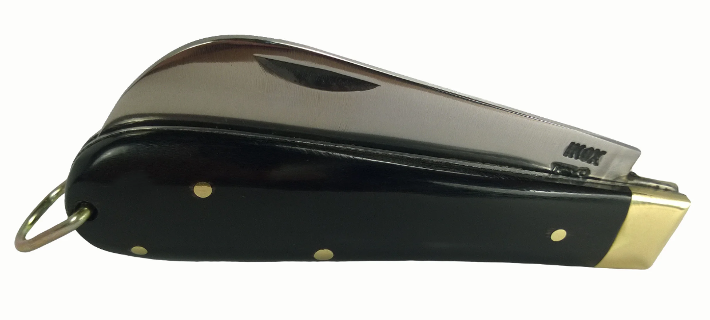
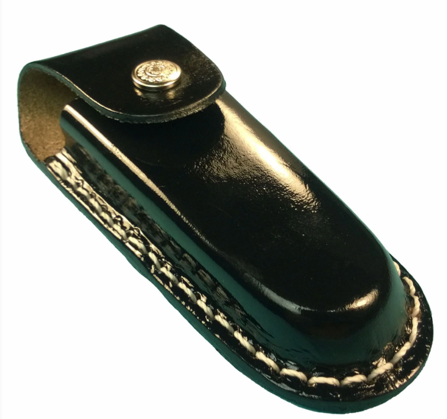
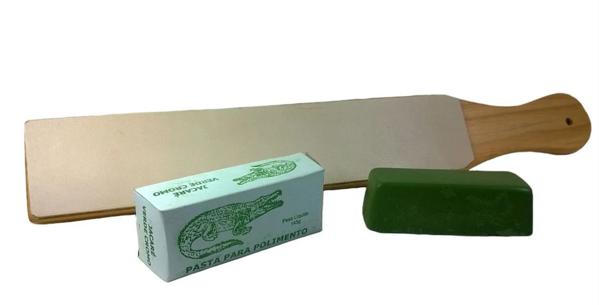
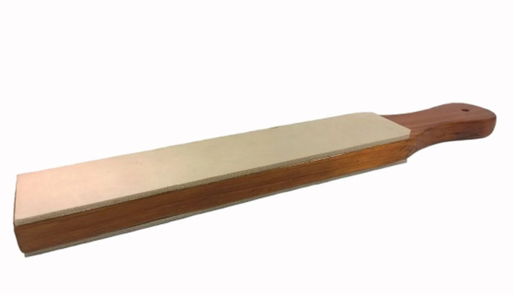
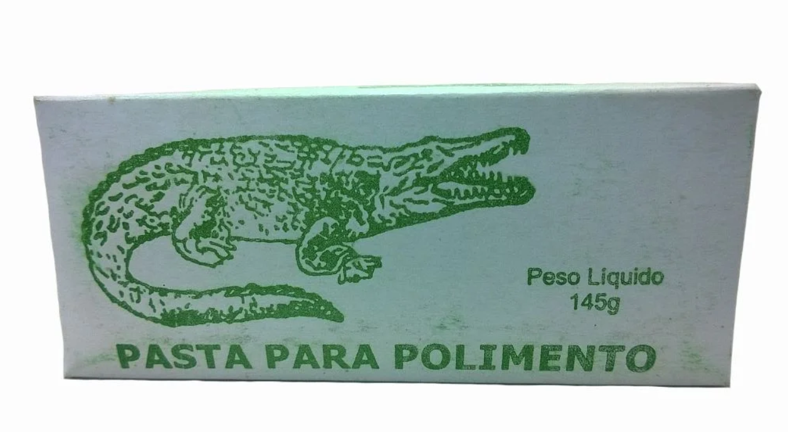

Plataforma web proprietária de comércio eletrônico, responsiva, acessível (WCAG 2.1 AA) e com custo fixo de infraestrutura zero (R$ 0,00), concebida para emancipar pequenos negócios artesanais da dependência exclusiva de marketplaces.
CUTELARIA ARTESANAL & AFIAÇÃO DE PRECISÃO



Gestão colaborativa estruturada com Kanban (Trello) e versionamento em Monorepo (GitHub)
RA: 24201757
Conformidade com diretrizes internacionais WCAG 2.1 AA, navegação estruturada por teclado, foco visível, alto contraste e suporte a leitores de tela (ARIA).
RA: 25205388
API RESTful em Node.js + Express, construção do motor nativo Pix (padrão Bacen/EMV com CRC16), integração Melhor Envio v2 e e-mails via Nodemailer.
RA: 24214497
Coordenação geral e fluxos ágeis da equipe, governança de código no GitHub, redação dos relatórios técnicos, documentação e produção audiovisual.
RA: 24220210
Configuração da infraestrutura serverless na nuvem Vercel (vercel.json e api/index.js), variáveis de ambiente e estabilidade em produção.
RA: 24223366
Modelagem relacional em PostgreSQL no Supabase, scripts DDL (schema.sql), carga inicial (seed.sql) e bucket público no Supabase Storage.
RA: 24210281
Bateria de testes funcionais de ponta a ponta (CT01 a CT06), validação do algoritmo de estoque de kits, expiração TTL do Pix e usabilidade mobile.
RA: 2013327
Desenvolvimento integral do frontend em HTML5 semântico, CSS3 Rústico Premium e Vanilla JS: vitrine dinâmica, carrinho, Guest Checkout e Painel Admin.
UNIVESP — 2026
Orientador: Prof. Francisco Leitão de Oliveira Neto
Polos DRP 10: Colina, Pitangueiras, Ribeirão Preto e Sertãozinho.
Diagnóstico situacional realizado junto à microempresa parceira Canivete da Roça (Sertãozinho – SP)
A dependência exclusiva de plataformas intermediárias (Mercado Livre e Shopee) acarreta tarifas e comissões onerosas que retêm entre 16% e 20% sobre o valor bruto de cada venda.
Impacto: Corrói o lucro líquido de produtos artesanais que exigem matéria-prima nobre (aço inox/carbono e couro soleta).
Os marketplaces restringem o acesso aos dados de contato do comprador, impedindo que a microempresa construa sua própria carteira de clientes.
Impacto: Inviabiliza ações estruturadas de pós-venda, suporte técnico de afiação, recompra direta e fidelização à marca.
Falta de conciliação automática de fretes multicanal e extrema dificuldade em sincronizar o saldo físico entre itens vendidos individualmente e agrupados em Kits de Afiação.
Impacto: Risco de vendas sem estoque disponível, cancelamentos e perda de reputação.

Strop Dupla Face Madeira Maciça • R$ 79,90
Pasta Verde Jacaré Óxido de Cromo • R$ 34,90Alinhamento direto às diretrizes curriculares do Projeto Integrador em Computação II (PJI240)
“Como projetar, desenvolver e implantar uma plataforma própria de comércio eletrônico, com custo fixo de infraestrutura nulo (R$ 0,00) e arquitetura modular em nuvem, capaz de mitigar a dependência operacional de marketplaces intermediários, integrando catálogo comercial, cotação logística dinâmica e liquidação automatizada de pagamentos instantâneos via Pix para um pequeno empreendimento de cutelaria?”
| Disciplina UNIVESP | Aplicação Prática no Projeto |
|---|---|
| Engenharia de Software | Design Thinking, requisitos (RN01–RN07), máquina de estados do pedido, Git/GitHub e testes E2E. |
| Bancos de Dados | Modelagem DER em 3ª Forma Normal (3FN), scripts DDL (schema.sql), índices e PostgreSQL. |
| Desenvolvimento Web | HTML5 semântico, CSS3 responsivo, JavaScript Vanilla (Fetch API) e backend Node.js + Express. |
| Redes e Sist. Distribuídos | Protocolo HTTP/HTTPS, payloads JSON, CORS, mensageria SMTP (Nodemailer) e nuvem Serverless. |
| Acessibilidade & IHC | Design centrado no usuário, Guest Checkout sem atrito, navegação por teclado e atributos ARIA. |
Empatia com a comunidade parceira, ideação orientada à viabilidade econômica e prototipagem iterativa
frontend/, backend/, database/ e api/.Separação limpa de responsabilidades, imagens em Object Storage e tolerância a falhas (Dual-Mode Fallback)
TAB, :focus-visible e aria-live.
api/index.js e vercel.json a custo R$ 0,00.
produtos.json e pedidos.json.
categorias, produtos, kit_itens, pedidos, pedido_itens, avise_me.
Autonomia financeira sem taxas de gateway e cálculo automatizado de cubagem no Melhor Envio v2
backend/pix.js)00 Payload Format, 26 Merchant Account GUI br.gov.bcb.pix, 53 Moeda 986 BRL, 54 Valor, 59 Recebedor, 60 Cidade Sertãozinho e 62 txid).0x1021 no campo 6304, garantindo leitura válida nos aplicativos bancários.Cancelado e estorna o saldo ao estoque automaticamente.Pagamento aprovado e o envio imediato de e-mails no PI2.backend/frete.js)peso_g) e estima dimensões físicas da caixa a partir do CEP de origem em Sertãozinho (14170-460).backend/email.js)canivetedarocaunivesp@gmail.com) com até 500 disparos gratuitos/dia.Fluxo comercial de ponta a ponta desenhado para máxima conversão e facilidade operacional
Navegação fluida por categorias (GET /api/produtos?categoria=slug) sem recarregar a página.
Quando estoque <= 0, desabilita a compra e ativa captura de lead na tabela avise_me.
Compra em etapa única sem exigir criação de conta ou senha.
Gera protocolo público (ex: PED-...) e permite consulta rápida de status por Código do Pedido ou CPF.
Atalhos de salto (Skip Links), navegação integral via teclado (TAB), foco destacado (:focus-visible).
Regiões dinâmicas aria-live="polite", textos alternativos e suporte a prefers-reduced-motion.
Autenticação protegida por sessão HTTP-Only (express-session).
Permite cadastrar produtos e kits, controlar estoque, aprovar pagamentos e atualizar códigos de rastreio.
Verificação empírica de ponta a ponta (End-to-End) antes da disponibilização em ambiente de produção
| ID | Módulo Avaliado | Procedimento de Teste Executado | Resultado Obtido | Status |
|---|---|---|---|---|
CT01 |
Catálogo & Filtros | Filtragem sucessiva por Canivetes, Bainhas, Strops, Polimento e Kits. | Vitrine atualizada dinamicamente via Fetch sem recarregar a página. | ✔ Sucesso |
CT02 |
Cotação de Frete | Inserção de CEPs do Sudeste e demais regiões no Produto e Checkout. | Cálculo instantâneo de PAC, SEDEX e Jadlog com cubagem e peso reais. | ✔ Sucesso |
CT03 |
Motor Pix Bacen | Geração de QR Code dinâmico e validação da string Copia e Cola (CRC16). | Payload aderente ao padrão EMVCo com leitura imediata em app bancário. | ✔ Sucesso |
CT04 |
Expiração TTL (30m) | Simulação de decurso de 30 minutos sem pagamento da cobrança Pix. | Pedido alterado para Cancelado e itens devolvidos ao estoque disponível. | ✔ Sucesso |
CT05 |
E-mails Nodemailer | Fechamento de compra Guest Checkout e confirmação de pagamento. | E-mails HTML transacionais entregues na caixa de entrada do cliente. | ✔ Sucesso |
CT06 |
Acessibilidade WCAG | Navegação integral via tecla TAB, Skip Link e leitor de tela. |
Foco visível em todos os controles interativos e anúncios ARIA corretos. | ✔ Sucesso |
Resultados alcançados na homologação em produção junto ao responsável Sr. Fernando Gonçalves (Sertãozinho – SP)
Papel extensionista da universidade pública na transformação digital de pequenos produtores locais
A seguir, demonstraremos ao vivo o fluxo completo do cliente e do lojista na aplicação Canivete da Roça
Navegação na Home Rústica Premium, uso do atalho de teclado (Skip Link / TAB), filtragem dinâmica por categorias e visualização de detalhes do produto.
Cálculo dinâmico de frete por CEP (Melhor Envio v2), compra sem senha (Guest Checkout), geração do QR Code Pix Bacen (CRC16) com timer de 30 min e simulação de aprovação com e-mail.
Acompanhamento público do pedido pelo cliente e acesso ao Painel Administrativo do lojista para gestão de catálogo, estoque de kits e status dos pedidos.
Clique no botão ao lado para abrir a vitrine principal da Canivete da Roça e continuar a gravação mostrando o sistema em funcionamento.